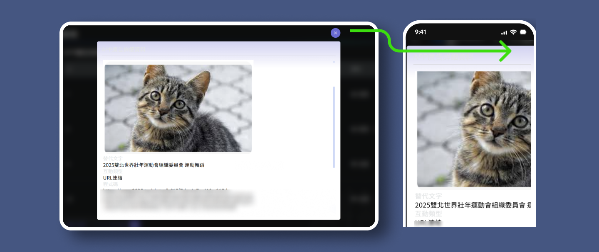
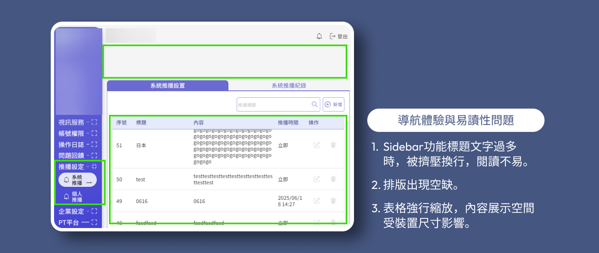
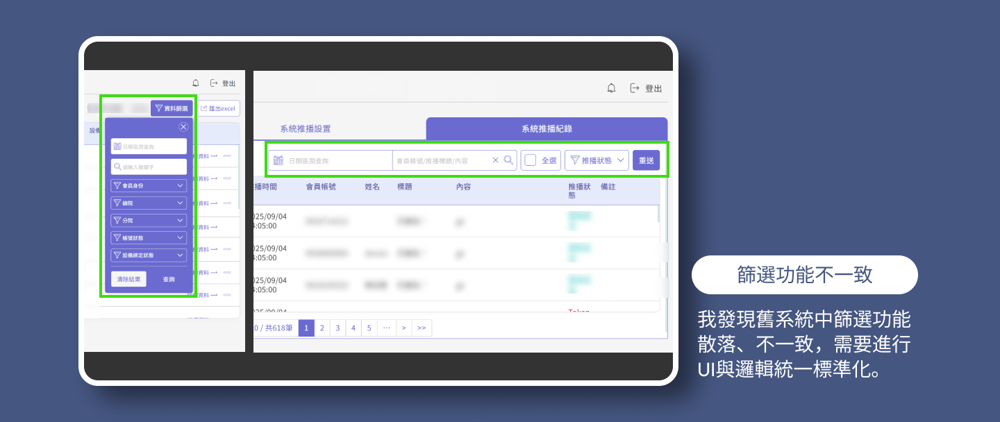
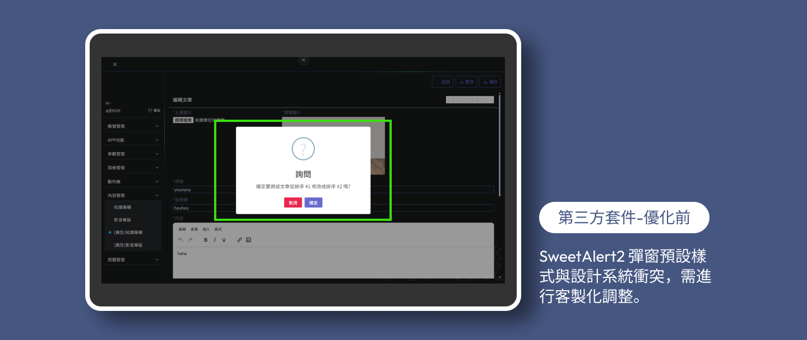

運動APP後台管理系統-
UI/UX重構與設計系統建置
挑戰將預估156天極限壓縮至92天內，針對企業後台進行 UI/UX 重構。透過建立模組化設計系統與導入 Git 協作流程，解決介面與操作流程不一致痛點，成功提升團隊開發效率與產品一致性。

UI RWD/SaaS ERP
專案簡介
針對企業內部高流量後台進行 UI/UX 重構。本專案挑戰在於預估156天極限壓縮時程內（92天），整合舊有功能並同步開發新需求。
●
挑戰：
需整合既有舊系統與新功能需求，原系統因功能快速搬運導致 UI 邏輯與視覺風格混亂。
●
目標：
在有限資源下，重整 UI 架構並優化操作體驗，使後台系統邏輯與視覺保持一致。
我的角色與貢獻
我是部門唯一UI/UX設計師，為維持介面設計一致性與操作邏輯，同時確保專案開發效率提升。我跳脫單純的設計交付，直接參與前端架構開發：
1.
建立設計系統：
使用 Figma 定義規範，並將其轉化為標準化的 SCSS 元件庫。
2.
Git 協作開發：
直接進入 MVC 架構，透過開分支與解決衝突，減少來回溝通成本。
3.
全局 UI/UX 實作落地：
直接優化 Razor View (.cshtml) 結構，確保設計稿 100% 還原，並解決 RWD 響應式佈局問題。
專案成員
UI/UX設計師 x1 →我
全端工程師 x2
基於職業倫理，模糊處理並化名公司和專案名稱，揭示內容為已修改的虛構資料。如欲瞭解更多，歡迎透過人力網站與我聯繫。
協作流程革新
設計系統與Git整合
打造「活的」設計系統→從 Figma 到 Code 的無縫同步
-
我不僅在 Figma 定義視覺規範，更直接在專案 wwwroot 中建立 SCSS 元件庫。
●
一致性：
徹底解決舊系統中「同一元件多種樣式」的視覺雜訊，將按鈕、表單、Popup 等元件模組化，確保全站視覺與互動邏輯 100% 統一。●
高效率：
由我全權負責View層 (.cshtml) 的結構調整與Class套用。工程師無需分心處理 HTML/CSS 排版細節，僅需專注於後端資料串接，實現前端視覺設計與後端真正的職能分工。
解決方案展示
Popup 模組化：
針對舊系統中樣式破裂且無法關閉的彈跳視窗，我重構了 HTML 結構並套用標準化 CSS。這不僅修復了 UI 錯誤，更讓未來的 Popup 開發時間縮短至原本的
30%。

Git協作與部署優勢
-
透過與工程團隊共用 Git Repository，我能更靈活地控管設計品質。
●
即時修正：
發現UI跑版時，直接修改.cshtml與SCSS並推送到分支，省去製作截圖與來回溝通的時間。●
部署救援：
曾利用cherry-pick技巧，將獨立的UI修正，展現了超越傳統設計師的技術價值。
資訊架構
與響應式設計策略
桌面端→優化高密度資料呈現
-
針對後台系統資訊過載的問題，我重新定義了版面配置優先級。
●
導航體驗：
固定 Sidebar 寬度並導入階層式選單，確保導航文字不因內容擠壓而換行，維持清晰的導引功能。●
表格易讀性：
捨棄強行縮放表格的作法，改採保留欄位最佳寬度並搭配水平滾動 (Horizontal Scroll)，優先展示重要數據，降低使用者閱讀壓力。


移動端→Table to Card 響應式轉換
-
為了讓使用者能隨時隨地透過平板或手機操作後台，我制定了明確的RWD策略。
●
移動裝置體驗：
當螢幕小於 767px 時，自動將複雜的表格資料轉換為 卡片式 (Card UI) 排列。這符合移動裝置的垂直瀏覽習慣，確保資訊在窄螢幕上依然清晰可讀。


邏輯統一 →標準化篩選模組換
-
解決舊系統中篩選功能散落、邏輯不一的問題。
●
架構決策：
考量設計落地性，我主動規劃了兩套實作方案（共用入口 vs 各頁獨立按鈕）並發起技術評估。經與工程師討論後，選定擴充性最佳的「統一篩選側欄」模組。●
設計落地：
將觸發按鈕固定於 Header，側欄容器共用，內容則由各頁面動態注入。這不僅統一了全站的操作心智模型，也讓程式碼結構更易於維護與擴充。

設計邏輯一致性
極致視覺統合
突破技術限制
-
在整合第三方提示套件 SweetAlert2 時，面臨樣式與結構被封裝在 JavaScript 中，導致標準 CSS 覆蓋失效的難題。
●
協作解決：
我主動提出視覺整合需求，並與工程師協作。由工程師協助梳理JS設定檔結構，創造出讓我能介入的維護空間。●
直接實作：
我直接進入 JS 檔案中調整樣式參數與 Class 設定，成功將原本風格迥異的套件，「客製化」為符合設計系統規範的標準元件，實現了真正意義上的全站視覺統一。
JS 套件深度客製 (SweetAlert2)

廣泛覆蓋
-
針對select2 多選擇套件、TinyMCE 文章編輯器等常見的第三方套件，我也逐一進行了標準化處理。
●
全面性：
我不僅處理了單一元件，更將所有套件的控制項與導航頁碼納入規範。●
視覺一致：
透過全域 CSS 覆寫，消除不同套件原生的視覺差異（如邊框顏色、圓角、選取狀態），確保使用者在操作任何功能時，都能獲得一致的視覺回饋。
表單與功能元件的全面統合